high frequencies

low frequencies
Convolutions, edge detection, sharpening, hybrid images, and multiresolution blending
A convolution takes a kernel (a small grid of weights), flips it, and slides it over the image,
which you can think of as just a grid of brightness values. For each pixel in the image, I
centered the kernel on that pixel and multiplied each kernel number by the image pixel underneath
it. I then added all of those products together, and the sum is the new value for that pixel in
the output image.
I implemented the convolution two ways: once with 4 for loops and once with 2 for loops. The
4-loop implementation uses 2 loops to visit every image pixel, and then 2 more loops to walk
through each kernel entry for that pixel. The 2-loop implementation uses np.sum()
instead. I still visited every pixel, but I grabbed the whole patch under the kernel and called
np.sum(patch * k) instead of looping over the kernel myself.
When the kernel is centered on a pixel near the border, part of it hangs off the edge of the
image, so I implemented zero padding. The padding adds extra pixels with a value of 0 around the
border of the image, so the kernel always has something to multiply. For the output size, "full"
mode keeps the larger padded size, and "same" mode crops the output back to the same size as the
input.
def zero_pad(img, ph, pw):
"""Surround img with ph rows of zeros top/bottom and pw cols left/right."""
H, W = np.shape(img)
padded = np.zeros((H + 2 * ph, W + 2 * pw), dtype=np.float64)
padded[ph:ph + H, pw:pw + W] = img
return padded
def conv2d_4loops(img, kernel, mode="same"):
img = img.astype(np.float64)
k = kernel[::-1, ::-1].astype(np.float64) # flip kernel
h, w = np.shape(img)
kh, kw = np.shape(k)
padded = zero_pad(img, kh-1, kw-1) # zero-fill boundary
outH, outW = h + kh - 1, w + kw - 1 # "full" output size
out = np.zeros((outH, outW))
for i in range(outH):
for j in range(outW):
total = 0.0
for u in range(kh):
for v in range(kw):
total += padded[i + u, j + v] * k[u, v]
out[i, j] = total
if mode == "same": # crop center back to input size
r, c = (kh - 1) // 2, (kw - 1) // 2
out = out[r:r + h, c:c + w]
return out
def conv2d_2loops(img, kernel, mode="same"):
img = img.astype(np.float64)
k = kernel[::-1, ::-1].astype(np.float64) # flip kernel
h, w = np.shape(img)
kh, kw = np.shape(k)
padded = zero_pad(img, kh-1, kw-1) # zero-fill boundary
outH, outW = h + kh - 1, w + kw - 1 # "full" output size
out = np.zeros((outH, outW))
for i in range(outH):
for j in range(outW):
patch = padded[i:i + kh, j:j + kw]
out[i, j] = np.sum(patch * k) # inner two loops → one numpy op
if mode == "same": # crop center back to input size
r, c = (kh - 1) // 2, (kw - 1) // 2
out = out[r:r + h, c:c + w]
return outThe filters I applied to my photo:
box = np.ones((9, 9)) / 81.0 # 9x9 box: weights sum to 1, so brightness is preserved
Dx = np.array([[1, 0, -1]]) # horizontal difference
Dy = np.array([[1], [0], [-1]]) # vertical differencescipy.signal.convolve2dThe outputs of my convolutions and scipy.signal.convolve2d are nearly identical.
For the box filter, the max pixel difference is 3.4 × 10−15,
which is just floating-point rounding. For Dx and Dy, the outputs are
exactly the same.
| Filter | 4 loops | 2 loops | scipy |
|---|---|---|---|
| Box 9×9 | 11.945 s | 2.395 s | 0.048 s |
| Dx | 0.555 s | 2.350 s | 0.004 s |
| Dy | 0.706 s | 2.500 s | 0.016 s |
The scipy function runs much faster than both of my implementations because its loops run in compiled C code, which is much faster than Python. The 2-loop implementation is faster than the 4-loop one for the box filter but slower for Dx and Dy, because its speed doesn't depend on the kernel size. In the 2-loop version, one numpy call handles all the kernel calculations for each pixel, and that call takes about the same time no matter how big the kernel is. In the 4-loop version, the number of calculations per pixel depends entirely on the kernel size. For the 9×9 box filter, one numpy call is much faster than 81 separate multiplies, but for the 3-entry Dx and Dy, the overhead of the numpy call costs more than just doing 3 multiplies.
scipy can also handle boundaries in other ways than the zero padding I described above. With
boundary="symm", scipy mirrors the image at each edge, which looks more realistic than
filling the border with black 0 values. You can also use boundary="wrap", which
pretends the image repeats. For example, if you go past the right edge, you would see the left
edge.
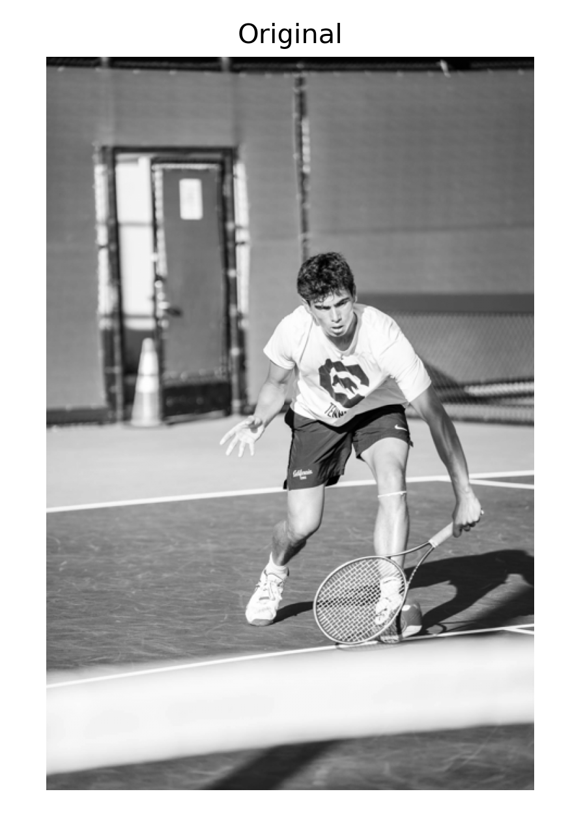
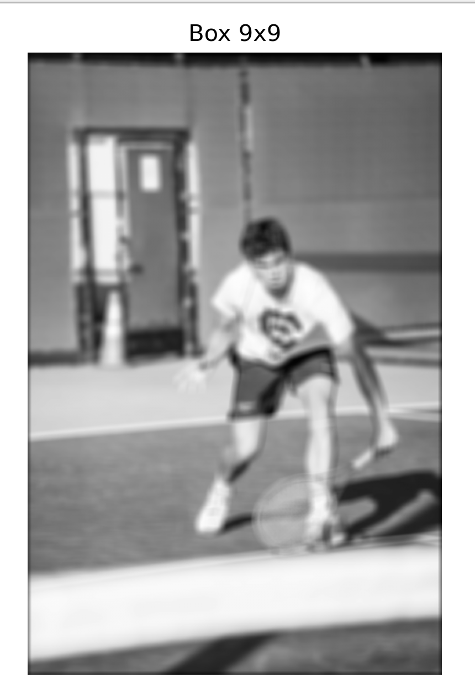
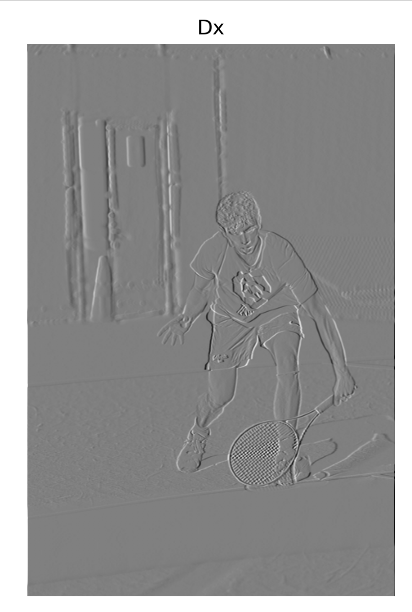
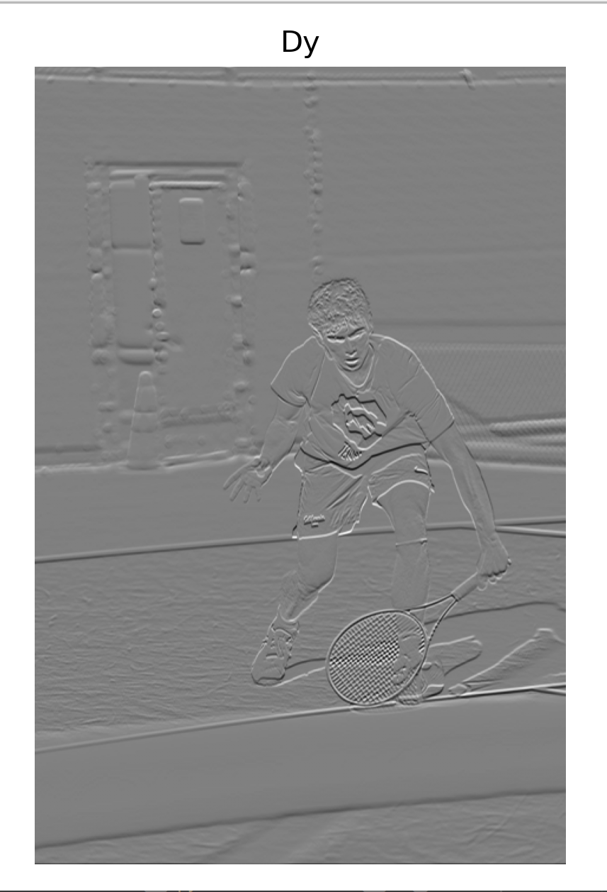
To find edges in the cameraman image, I first convolved it with Dx and Dy.
Convolving with Dx gives the partial derivative ∂I/∂x, which tells you how
much the brightness changes as you move left to right, so it picks up vertical edges like the
tripod legs. Convolving with Dy gives ∂I/∂y, which tells you how much the
brightness changes as you move top to bottom, so it picks up horizontal edges like the
horizon. In flat areas like the sky, neighboring pixels are about the same, so both come out
close to 0 (mid-gray in the images below).
Since each derivative only catches edges in one direction, I combined them into the gradient
magnitude:
‖∇I‖ = √( (∂I/∂x)² + (∂I/∂y)² )
The gradient magnitude measures how strong the edge is at each pixel, no matter which direction
the edge runs. Squaring also gets rid of negative signs, so both bright-to-dark and dark-to-bright
transitions count.
Finally, to get a clean edge image, I binarized the gradient magnitude: every pixel above a
threshold is marked as an edge (white), and everything else is set to black.
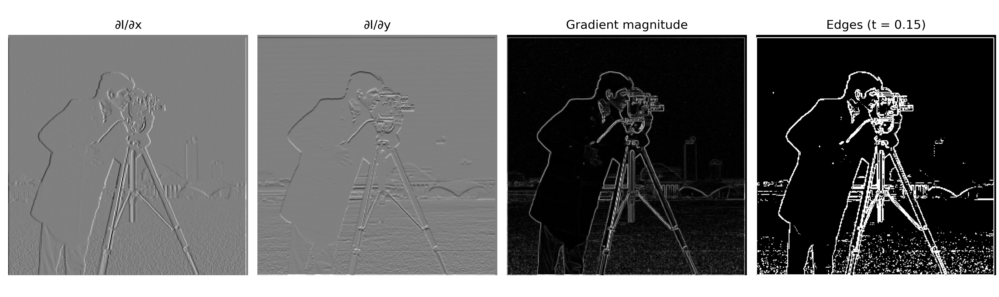
Picking the threshold is a tradeoff between getting rid of noise and keeping the real edges, so
I tried values from 0.05 to 0.3. At 0.05 and 0.1, the grass is covered in white speckles,
because its texture creates lots of small gradients that make it over the threshold. At 0.25
and 0.3, the grass is mostly clean, but the real edges start breaking apart, and parts of the
tripod legs and the buildings in the background become dashed or disappear.
I chose 0.15 because it keeps the outline of the man, the camera, and the tripod connected
while removing most of the noise. There is still some speckle left in the grass, because the
grass texture and the weaker real edges have similar gradient strengths, so no single threshold
can remove one without losing the other.
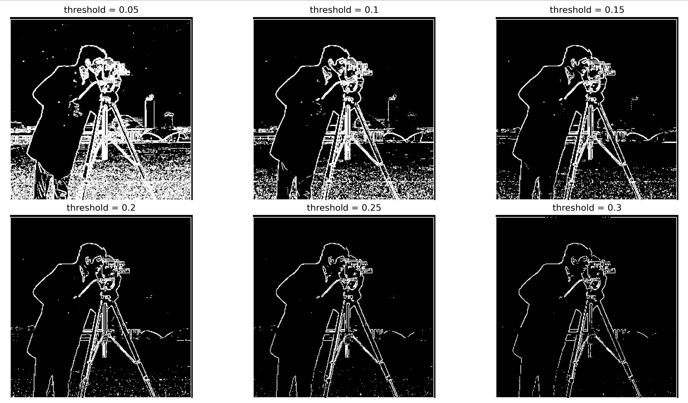
The results in Part 1.2 are noisy because Dx and Dy react to every small change in brightness, including the texture of the grass. If I blur the image with a Gaussian first, those small changes get smoothed out before I take the derivative, while the big edges are still there.
To make the Gaussian filter, I took a 1D Gaussian from cv2.getGaussianKernel and
multiplied it by its transpose (an outer product) to get a 2D Gaussian. I used σ = 2 and a
13×13 kernel, which is 6σ + 1, so the kernel covers 3σ in each direction. I
blurred the cameraman with it, and then repeated the same steps from Part 1.2 on the blurred
image.
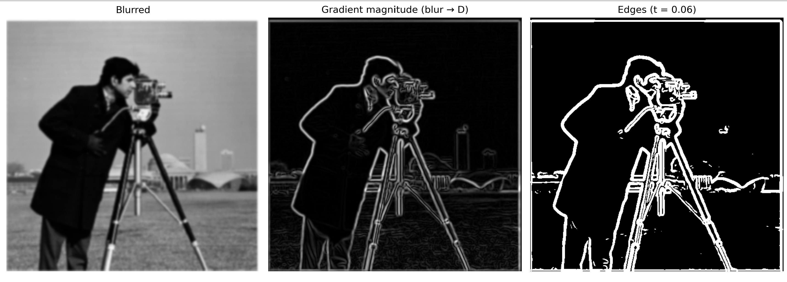
Blurring spreads each edge out over more pixels, so the brightness changes more gradually and the gradients come out weaker. Because of that, the threshold from Part 1.2 was too high, so I tried a lower range, from 0.02 to 0.12. I chose 0.06: at 0.02 and 0.04 the grass still shows up as blobs, and at 0.08 and above, parts of the tripod legs and the background buildings start to disappear.
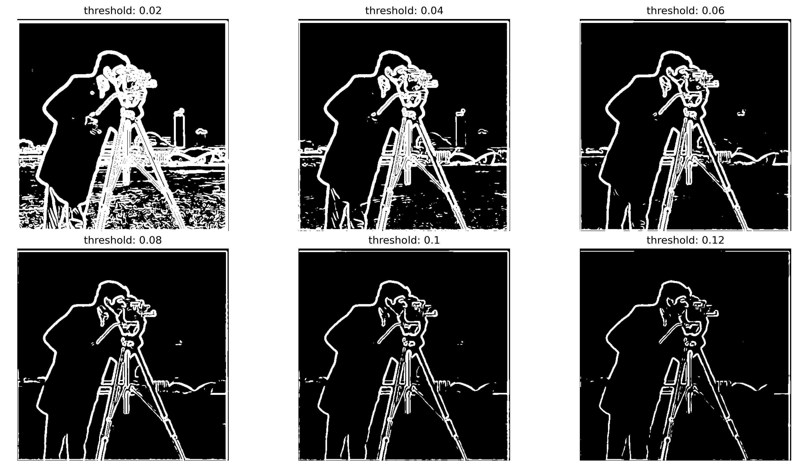
What differences do you see? Compared to Part 1.2, the edges are much cleaner. The speckle in the grass is almost completely gone, because the Gaussian averaged out the grass texture before it was differentiated. The edges are also thicker and smoother: instead of thin, jagged lines, the outlines of the man and the tripod are continuous curves. The downside is that some fine detail is lost, like the small parts of the camera and the man's face blending together, and the edges are a little less precisely located.
Convolution is associative, which means (I ∗ G) ∗ Dx =
I ∗ (G ∗ Dx). So instead of blurring the image and then taking the
derivative, I can convolve the Gaussian with Dx and Dy once to make two
derivative of Gaussian (DoG) filters, and then apply each one to the image with a single
convolution.
In the filters below, gray is 0, white is positive, and black is negative. DoGx is a
bright blob next to a dark blob, so it responds when the brightness changes from left to right.
DoGy is the same thing rotated, with the blobs stacked on top of each other, so it
responds to changes from top to bottom.
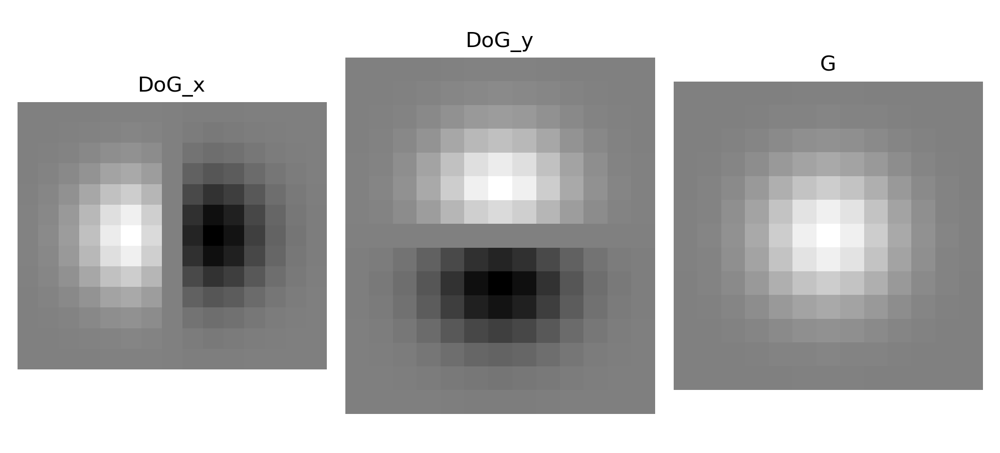
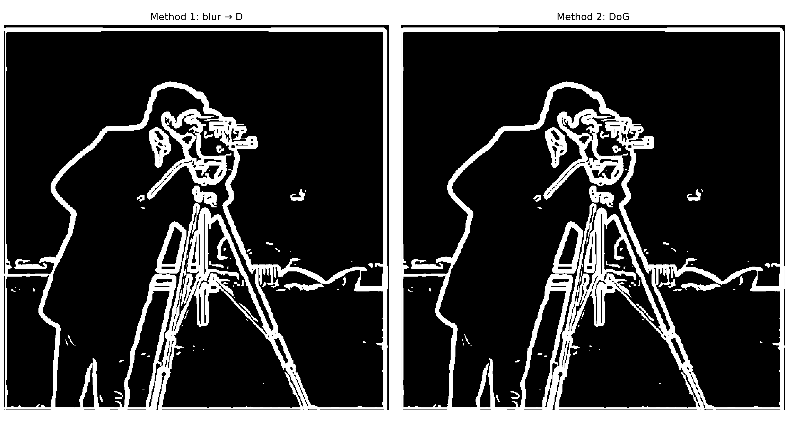
Verification: The two methods give the same result. I compared ∂I/∂x
and ∂I/∂y from both methods with np.allclose, and both returned True. The
largest difference in gradient magnitude was 1.7 × 10−15, which
is just floating-point rounding. I left out a 13-pixel border when comparing, because the two
methods pad the edges of the image slightly differently.
A Gaussian filter is a low-pass filter: blurring an image keeps the low frequencies (smooth areas and overall shapes) and removes the high frequencies (edges and fine texture). That means if I subtract the blurred image from the original, only the high frequencies are left:
high = image − image ∗ G
Adding a scaled copy of the high frequencies back to the original exaggerates the edges and detail, which makes the image look sharper. α controls how much gets added back:
sharpened = image + α · high
Since every step is just a convolution, addition, or scaling, the whole thing can be combined into one filter, called the unsharp mask filter. Here δ is the unit impulse, a kernel that is 1 in the center and 0 everywhere else, so convolving with it leaves the image unchanged:
sharpened = image ∗ ((1 + α)δ − αG)
I used a Gaussian with σ = 1 (a 7×7 kernel) and filtered each color channel separately.
To check that the single filter really does the same thing as the step-by-step version, I compared
the two with np.allclose, which returned True, with a max difference of about
1.8 × 10−15.
The high-frequency image is almost entirely flat gray (zero), with detail only along the edges: the carvings on the walls, the outlines of the domes, the scaffolding, and the trees. After adding it back with α = 2, all of that detail looks noticeably crisper in the sharpened image.
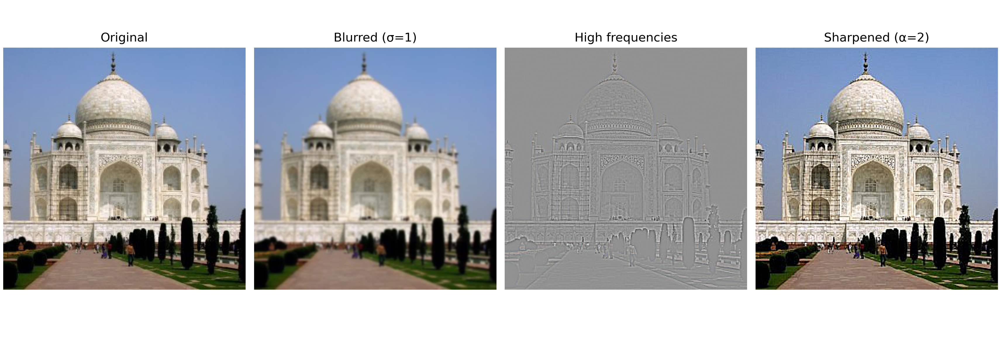
At α = 0.5 and 1, the change is subtle and mostly shows up in the carvings and the edges of the domes. At α = 2, the image is clearly sharper but still looks natural. At α = 5, it is over-sharpened: the marble looks grainy, the sky picks up noise, and bright halos show up around high-contrast edges like the trees. Sharpening can only amplify what is already in the image, so with a large α it also amplifies noise and compression artifacts, not just the real detail.
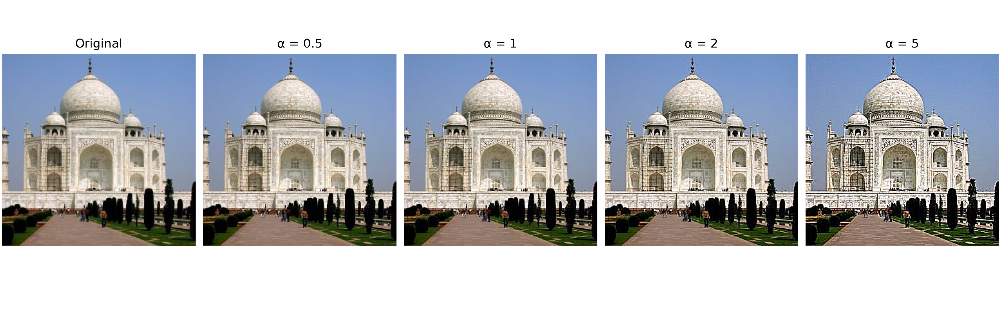
I also sharpened a photo I took of the Campanile at sunset, with the same σ = 1 and α = 2. Most of this photo is smooth sky, so the high-frequency image is almost completely flat. The only strong high frequencies are the outline of the tower, its windows and clock, and the leaves along the edges of the trees, and those are exactly the parts that get crisper in the sharpened version.
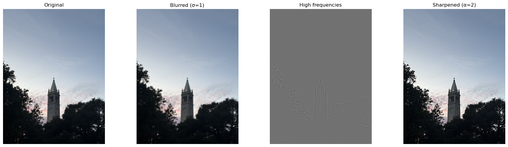
To see how much detail sharpening can actually recover, I took the sharp Taj Mahal image, blurred it on purpose, and then ran the blurred version through the unsharp mask filter with α = 2.
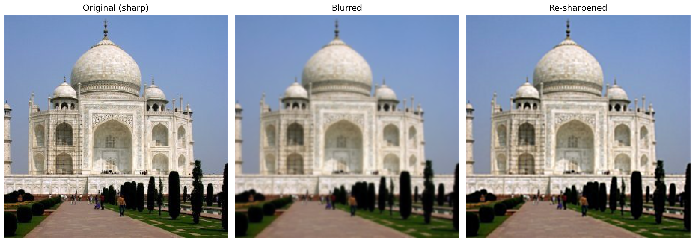
The re-sharpened image looks better than the blurred one, and the outlines of the domes, arches, and trees are more defined. But it still doesn't match the original. The fine details, like the scaffolding on the left side, the carvings around the main arch, and the people on the walkway, are still missing. Blurring removed those high frequencies completely, and sharpening can only boost high frequencies that are still in the image, so it can't bring back information that is gone. It makes edges more contrasty so the image looks sharper, but it doesn't add back real detail.
A hybrid image looks like one thing up close and another thing from far away. This works because
of how we see frequencies: up close, the high frequencies (sharp edges and fine detail) are what
we notice most, but from far away those details are too small to see, so only the low frequencies
(overall shapes, shading, and color) are left.
To make one, I take the high frequencies of the first image and the low frequencies of the second
image and add them together:
hybrid = (im1 − im1 ∗ Gσ1) + im2 ∗ Gσ2
The low-pass filter is a Gaussian blur with σ2, and the high-pass filter is the
image minus its own Gaussian blur with σ1, the same idea as in Part 2.1. Before
filtering, I aligned the two images with the provided align_images code, by picking
two matching points in each image (like the eyes). It shifts, scales, and rotates the first image
so those points line up with the second.
The top row below shows the aligned inputs, the high-passed Derek, the low-passed Nutmeg, and the final hybrid. The bottom row shows the log magnitude of the Fourier transform of each image. In a Fourier transform, the center is the lowest frequencies, and the farther out you go from the center, the higher the frequency.
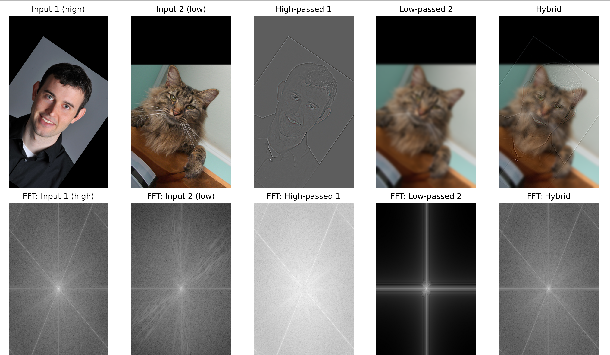
The Fourier transforms show what each filter is doing. The low-passed Nutmeg's transform is dark everywhere except a small bright area in the center, because the Gaussian removed everything but the lowest frequencies. The high-passed Derek's transform is the opposite: it is spread out over the whole image, and the very center is darker. The hybrid's transform looks like the two combined, with the low frequencies coming from Nutmeg and the rest coming from Derek. The straight diagonal lines in several of the transforms come from the sharp edges of the black borders that the alignment added when it rotated the images, not from the photos themselves.
Choosing the cutoffs: I used σ1 = 3 for Derek's high-pass and σ2 = 8 for Nutmeg's low-pass. If σ2 is too small, Nutmeg's fur and whiskers stay sharp and compete with Derek up close, and if it is too large, Nutmeg turns into a blur that is hard to recognize even from far away. If σ1 is too small, only Derek's thinnest edges are left and he is hard to see up close, and if it is too large, too much of his shading comes through and he is still visible from far away.
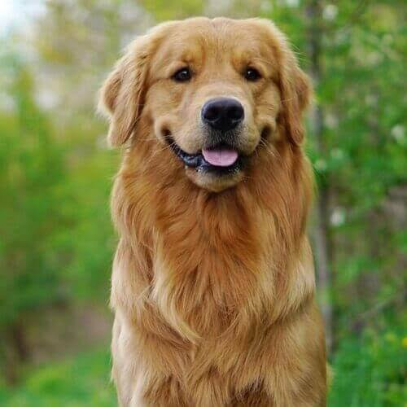
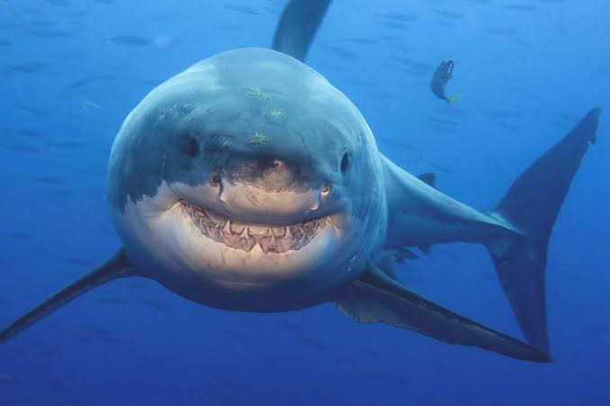
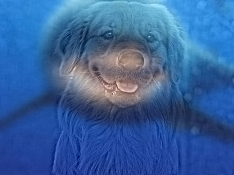
Up close, this looks like a smiling golden retriever. From far away, the dog's fur and eyes fade
out, and you mostly see the shark: its blue body, its fins, and the light patch around its
mouth.
A few choices made this work. First, instead of lining up the eyes, I lined up the point between
the eyes and the mouth. The shark's eyes are much farther apart than the dog's, so lining up the
eyes would have made the dog twice as big and put its nose on the shark's mouth. This way, the
dog's smile sits right on the shark's grin. Second, I cropped off the black borders that the
alignment adds. Third, I only used the grayscale high frequencies of the dog, so all of the color
comes from the shark. Before, the dog's brown and green mixed with the shark's blue and looked
muddy. Finally, I tested a few cutoffs and chose σ1 = 4 and
σ2 = 8: a smaller σ2 left the shark's teeth visible up close,
and a larger one made the shark too blurry to recognize from far away.
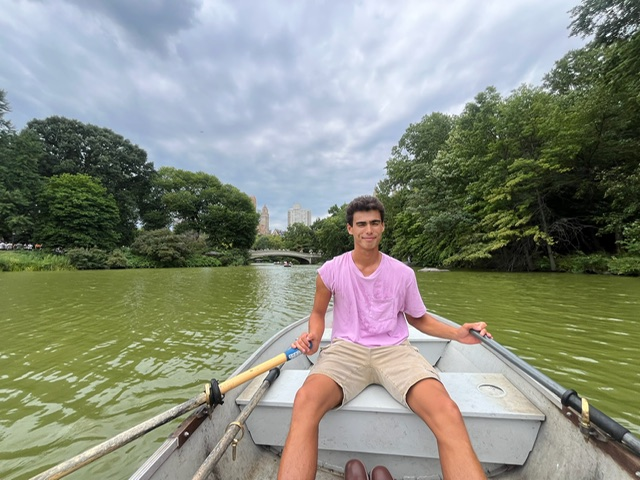
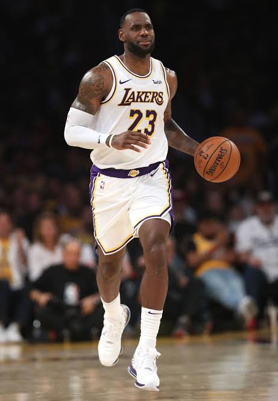
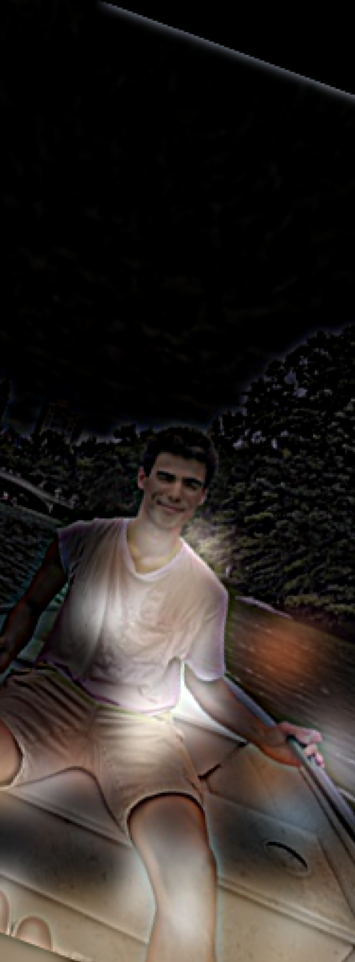
This one didn't work well. At any distance, you mostly see me in the boat, and LeBron only shows up as a bright glow on my shirt. There are a few reasons for this:
A stack is like an image pyramid, except the image is never downsampled, so every level is the
same size as the original. That makes it easy to line the levels up and combine them pixel by
pixel, which is what the blending in Part 2.4 needs.
Gaussian stack: level 0 is the original image, and each next level is the
previous level blurred again with a Gaussian. I used 6 levels, starting at σ = 2 and
doubling σ at each level (2, 4, 8, 16, 32). As you go down the stack, the fine texture
disappears first, then the edges, until only the overall color and shape of the fruit is
left.
Laplacian stack: each level is the difference between two Gaussian levels next to
each other, Li = Gi − Gi+1, so it only holds
the details that were removed by that one blur. The last level (level 5) is just the last,
blurriest Gaussian level. I used 6 levels instead of 5 so that levels 0 through 4 are all
difference levels, which is what Szeliski's Figure 3.42 shows. With only 5 levels, level 4 would
be the leftover blurry Gaussian instead. Because each difference cancels out with the next one,
adding all the Laplacian levels together gives back the original image exactly. I checked this with
np.allclose, which returned True for both the apple and the orange. The Laplacian
levels have negative values, so they are rescaled to display them, and mid-gray means 0.
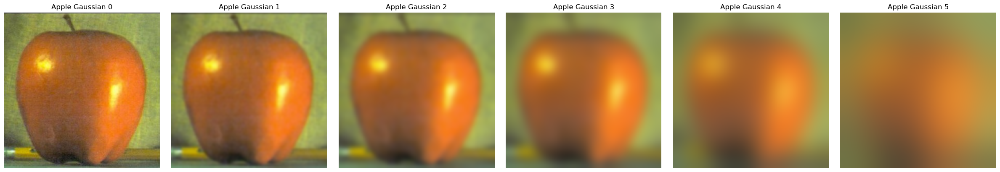
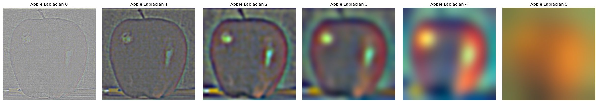
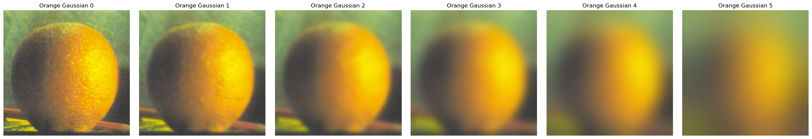
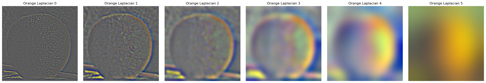
The Laplacian stacks split each image into bands of detail. Level 0 has the finest detail, like the dimpled texture of the orange peel and the grain of the background cloth. The middle levels have the edges and bigger features, like the outline of each fruit, the highlights on the apple, and the pencil. Level 4 only has very large, soft changes in color and brightness, like the overall shading of each fruit. The last level (level 5) is just a blurry blob of color.
To recreate Figure 3.42 from Szeliski, I applied a half-and-half mask to each level of the two
Laplacian stacks, keeping the left half of the apple and the right half of the orange. The mask is
also blurred with its own Gaussian stack, so its edge is sharp at level 0 and gets softer at each
level. The rows show Laplacian levels 0, 2, and 4, and the bottom row shows all the levels added
together. The columns are the masked apple, the masked orange, and the two added together.
At level 0 (fine detail), the seam is narrow, so the orange peel texture stops right at the middle.
At level 4 (large, soft changes in color and shading), the seam is very wide, so the two halves
fade into each other gradually. Adding all the levels together, including the leftover level 5,
gives the final Oraple, where the seam is barely visible.
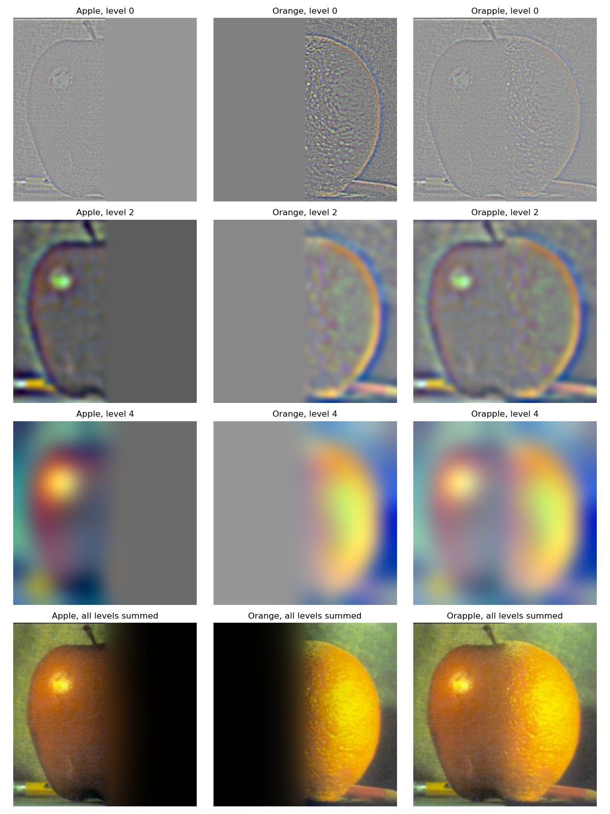
If you just paste the left half of one image next to the right half of another, there is an obvious seam. Blurring the seam doesn't completely fix it either: a small blur still leaves a sudden jump in color, and a big blur makes the fine details of both images overlap and look ghosty. Multiresolution blending fixes this by blending each band of detail with a seam of a matching width:
Li = GM,i · LA,i + (1 − GM,i) · LB,i.This way, the fine details are blended across a narrow, sharp seam, and the overall colors are blended across a wide, soft one, so you don't see a hard edge or ghosting. For the blends below, I used 5 levels, starting at σ = 2.


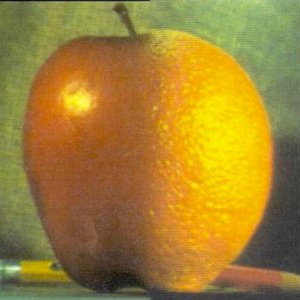
For the irregular mask, I put the felt of a tennis ball inside the shell of a pickleball. First, I aligned the two photos by cropping and scaling each one to 400×400, so both balls are the same size (300 pixels across) and centered in the same spot. Then I painted the mask by hand in Photopea, tracing a rough curve around the middle of the tennis ball. White is where the tennis ball shows and black is where the pickleball shows, so the result is a tennis ball center with the pickleball's holes showing around the edges.
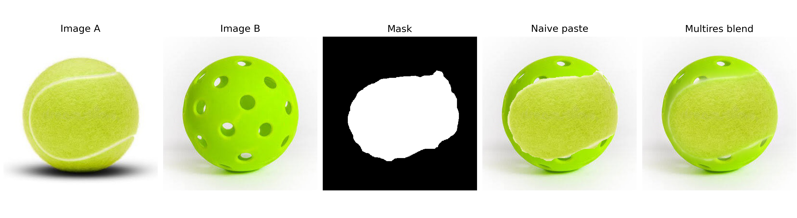
In the naive cut-and-paste, the tennis ball looks like a sticker with a jagged outline. In the multiresolution blend, the felt texture still stops close to the edge of the mask, but the color and shading fade gradually into the plastic, so the felt looks like part of the ball. It also helps that both balls are similar shades of yellow-green, so their colors blend together easily.
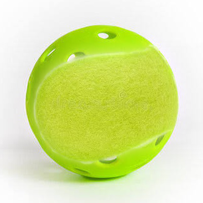
For my creative blend, I put a mountain range on top of a sunset beach with a horizontal mask: the top half comes from the mountain photo and the bottom half comes from the beach photo. Both photos are the same size, and the beach's horizon is almost exactly halfway down, so the seam lands right on the horizon, where a change in the scene looks natural.
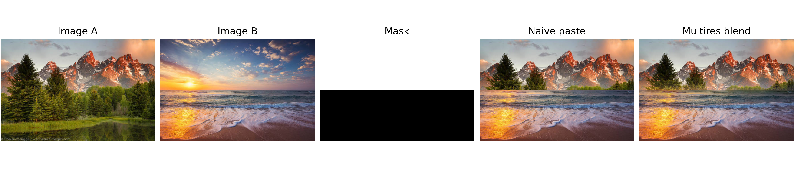
In the naive cut-and-paste, there is a hard line where the trees suddenly stop and the water starts. In the multiresolution blend, the bottom of the forest fades into the horizon, so it looks like the mountains are rising up from behind the ocean.
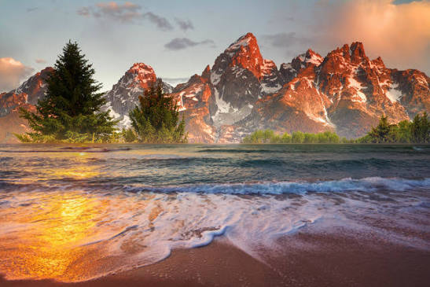
My favorite blend is the mountains and the beach. It mixes two of my favorite environments into
one scene, and I think it turned out really beautiful. The warm sunset light on the snowy peaks
matches the orange glow on the water, so the two photos look like they belong together. It is
also really satisfying to look at, because there is no obvious place where one photo ends and the
other begins. It just looks like a mountain range rising up behind the ocean.
The figure below shows how it was built. Each row is one Laplacian level, and the columns are the
masked mountains, the masked beach, and the two added together. The bottom row is all the levels
added up. At level 0, the mask is still sharp, so the fine details, like the rocky texture of the
mountains and the foam on the waves, stop right at the horizon. As the levels go up, the mask
gets blurrier, so the bigger features blend across a wider area. By level 4, the warm colors of
the mountain sky and the sunset over the water fade smoothly into each other. Adding all the
levels together gives the final blend, where every detail is sharp but the seam is hidden.
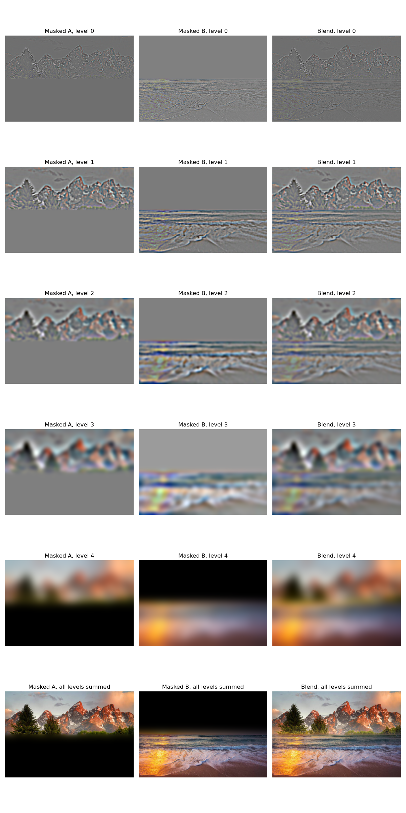
The most important thing I learned from this project is how to think about images in the
frequency domain. Before this, I thought of an image as just a grid of pixels, but now I see it as
a combination of low and high frequencies. The low frequencies are the smooth, slowly changing
parts of an image, like the overall shapes, shading, and color, and the high frequencies are the
parts that change quickly, like edges, fine texture, and noise. Almost everything in this project
came down to separating those two: blurring keeps the low frequencies, subtracting the blur leaves
the high frequencies, sharpening boosts the high frequencies, and blending mixes each band of
frequencies separately.
The hybrid images were where this clicked the most. Using the FFT to look at the log magnitude
spectrum of each image, I could actually see what each filter was doing. The low-passed image only
had energy near the center, the high-passed image had the center removed, and the hybrid combined
the two. I had already learned the theory behind Fourier transforms and the FFT algorithm in
previous classes, so it was really fun to finally see those ideas applied to real images and get
results I could look at, instead of just working through the math.